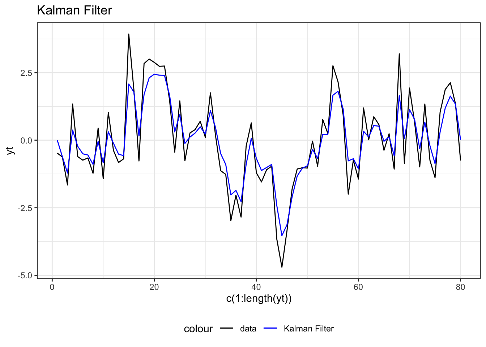
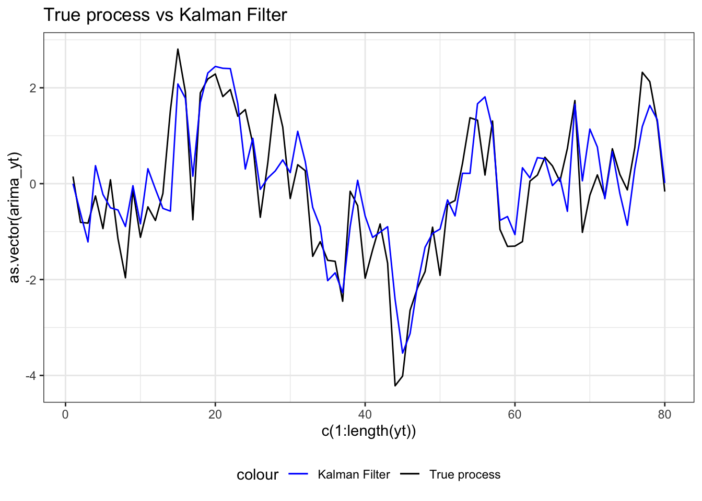
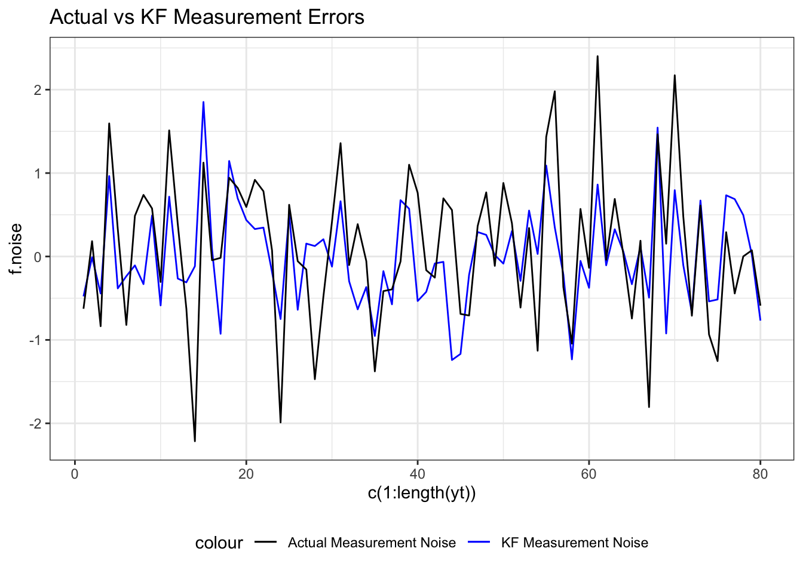
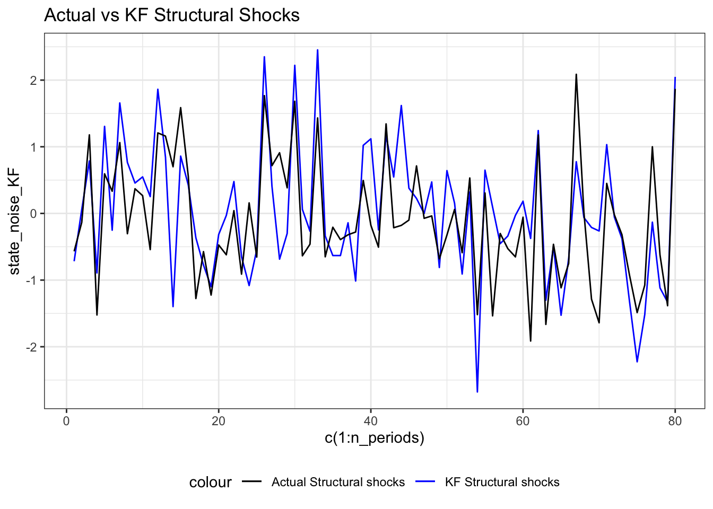

This document is generated with R-Markdown. All related files and code can be found in GitHub
This document provides an intuitive and simple introduction to Kalman Filtering.
The document is organised as follows: the first section motivates the usage of a Kalman Filter in an economic context and reviews the related theory. In particular, it focuses on the key results and ideas behind it–as we shall see, the Kalman Filter’s key idea is in reality surprisingly easy to understand. The second section applies the Kalman Filter algorithm to an extremely simple (yet not trivial) state-space model characterised by an AR(1) process as the state equation. The idea behind this is to simplify as much as possible in order to focus on the key elements that will then reveal useful to understand more complex problems.
This document is mostly based on lecture Notes from Prof. Mark Watson (Princeton University) given as part of the program for Beginning Doctoral students in Economics in Gerzensee taught in March 2020 ((Watson (2020)). The lecture notes are themselves heavily based on Hamilton (1995).
We typically observe economic data over time. These data, however, are likely to be noisy. The Kalman Filter (KF) (in an economic context) usually considers two types of potential noise: measurement and structural noise. More precisely, the KF makes the assumption that observed data are subject to measurement errors and are in reality generated by an unobservable process. This unobservable process is known as the state (or transition) equation and is subject to some noise that we can refer to as “structural”. In that context, the KF is an algorithm that allows to filter out the measurement noise in order to learn more about the true generating process of the data. In particular, it can be used to learn more about so-called structural shocks which are of crucial importance in DSGE models for instance.
The Kalman Filter was first used in physics but is now widely popular in economics.
Notation
The general form of the Kalman filter as presented in Hamilton Chapter 13 (add ref) is given by a “measurement equation”: \[\begin{align*} y_t = A'x_t + H'\xi_t + w_t \end{align*}\] With \(E(w_tw_t')=Q\)
And a transition (or state) equation: \[\begin{align*} \xi_t = F\xi_{t-1} + v_t \end{align*}\] With \(E(v_tv_t')=R\).
In words:
The general system defined by these two equations is flexible and can accomodate a variety of representation. For instance, a standard AR(p) process fits into the general notation in the following way:
Let \(y_t \sim AR(p)\), that is: \[\begin{align*} y_t = \phi_1 y_{t-1} + \phi_2y_{t-2} + ... + \phi_py_{t-p} + \epsilon_t \end{align*}\] This process can be represented as a “state-space” model in the following way: \[\begin{align*} &\xi_t = \begin{bmatrix} y_t \\ y_{t-1} \\ \vdots \\ y_{t-p+1} \end{bmatrix} \\ &F= \begin{bmatrix} \phi_1 & \phi_2 & \ldots & \phi_{p-1} & \phi_p \\ 1 & 0 & \ldots & 0 & 0 \\ 0 & 1 &&& 0 \\ \vdots & & \ddots & & \vdots \\ 0 &&&1&0 \end{bmatrix} \\ &v_t = \begin{bmatrix} \epsilon_t \\ 0 \\ \vdots \\ 0 \end{bmatrix} \end{align*}\]
And \(w_t=0, A=0,\) and \(H'=\begin{bmatrix}1 & 0 & \ldots & 0\end{bmatrix}\)
Notation:
In words, the Kalman filter is a recursive algorithm that constructs \(\xi_{t|t}\) and \(P_{t|t}\) from known values in \(t\), that is \(y_t,x_t, \xi_{t-1|t-1}, P_{t-1|t-1}\).
To derive the filter, we assume that both \(w_t\) and \(v_t\) follow iid Gaussian process, that is:
\[\begin{bmatrix} w_t \\ v_t \end{bmatrix} \sim N \left(\begin{bmatrix} 0 \\ 0\end{bmatrix}, \begin{bmatrix} R & 0\\ 0 & Q \end{bmatrix}\right)\]
This notably implies that both \(y_t\) and \(\xi_t\) follow a joint Normal distribution. Since errors are Gaussian, the best estimator (in the sense that it minimises the mean squared error) is given by the conditional expectation.
To find the conditional expectation of \(\xi_t\) and \(y_t\) (that is \(\xi_{t|t}\) and \(y_{t|t}\)), we can use the following theorem of the conditional distribution of a multivariate normal:
Suppose that:
\[\begin{bmatrix} z_1 \\ z_2 \end{bmatrix} \sim N \left(\begin{bmatrix}\mu_1 \\ \mu_2 \end{bmatrix}, \begin{bmatrix}\Sigma_{11} &\Sigma_{12}\\\Sigma_{21}&\Sigma_{22}\end{bmatrix}\right)\]
Then:
\[E(z_1|z_2) = \mu_1 + \Sigma_{12}\Sigma_{22}^{-1}(z_2 - \mu_2) \\ Var(z_1|z_2) = \Sigma_{11} - \Sigma_{12}\Sigma_{22}^{-1}\Sigma_{21}\]
The application of this theorem is the key idea of the Kalman Filter.
Defining \(z_1 = \xi_t\) and \(z_2 = y_t\), and recognizing that \(\xi_t\) and \(y_t\) are jointly Normal conditional on past values, we can write the following:
\[\begin{bmatrix} \xi_t \\ y_t \end{bmatrix} \Bigg | y_{1:t-1}\sim \mathcal{N}\left(\begin{bmatrix} \xi_{t|t-1} \\ y_{t|t-1} \end{bmatrix}, \begin{bmatrix} P_{t|t-1} & \Sigma_{\xi,y|t-1} \\\Sigma_{\xi,y|t-1} & \Sigma_{yy|t-1} \end{bmatrix}\right)\]
Using the formula of the conditional normal:
\[\begin{align*} \xi_{t|t}= \xi_{t|t-1} + \Sigma_{\xi,y|t-1}\Sigma_{yy|t-1}^{-1}(y_t-y_{t|t-1}) \\ P_{t|t} = P_{t|t-1} - \Sigma_{\xi,y|t-1}\Sigma_{yy|t-1}^{-1}\Sigma_{\xi,y|t-1} \end{align*}\]
Assuming \(\xi_{t-1|t-1}\) and \(P_{t-1|t-1}\) are known, the Kalman Filter algorithm is given by:
\[\begin{align*} &\xi_{t|t-1} = F\xi_{t-1|t-1} \\ &y_{t|t-1} = A'x_t + H'\xi_{t|t-1} \\ &P_{t|t-1} = FP_{t-1|t-1}F' + Q \\ &\Sigma_{yy|t-1} = H'P_{t|t-1}H + R \equiv h_t \\ &\Sigma_{\xi,y|t-1}\Sigma_{yy|t-1}^{-1} = P_{t|t-1}H h_t^{-1} \equiv K_t \\ &\eta_t = y_t-y_{t|t-1} \end{align*}\]
Applying the theorem, we get:
\[\begin{align*} &\xi_{t|t} = \xi_{t|t-1} + K_t \eta_t\\ &P_{t|t} = P_{t|t-1} - K_t H'P_{t|t-1} \end{align*}\]
If the process is covariance stationary, we can initialize it by assuming \(\xi_{0|0}=0\) and using a reasonable estimate of \(P_{0|0}\). We can then retrieve \(\xi_{t|t}\), and \(P_{t|t}\) for all \(t>0\) applying this procedure recursively.
To better understand the algorithm let us consider the following (uni-dimensional) simple example.
The state space model is of the form:
\[\begin{align*} &y_t = \phi \xi_t + w_t \\ &\xi_t = \xi_{t-1} + v_t \end{align*}\] For simplicity, we assume that the transition equation is known with certainty and that \(\phi=\) 0.8. Moreover, we assume that \(w_t\) and \(v_t\) are i.i.d and independent of one another with \(\sigma^2_w=\) 1 and \(\sigma^2_v=\) 1.
With that information, we can generate \(y_t\). Next graph provides a graphical representation.
##
## Attaching package: 'plotly'## The following object is masked from 'package:ggplot2':
##
## last_plot## The following object is masked from 'package:stats':
##
## filter## The following object is masked from 'package:graphics':
##
## layoutThe last step is to initalize the loop. We assume \(\xi_{0|0}=0\) because the process is covariance stationary, and \(P_{0|0}=1\) arbitrarily.
Since \(\xi_{0|0}\) and \(P_{0|0}\) are known, we can recursively compute \(\xi_{t|t}\) and \(P_{t|t}\) for \(t>0\) using the Kalman Filter algorithm:
\[\begin{align*} &\xi_{t|t-1}= \phi \xi_{t-1|t-1} \\ &y_{t|t-1} = \xi_{t|t-1} \\ &P_{t|t-1} = \phi^2P_{t-1|t-1} + \sigma_v^2 \\ &h_t \equiv Var(y_t|t-1) = P_{t|t-1} + \sigma^2_w \\ &K_t = Cov(\xi_t,Y_t|t-1)\times h_t = P_{t|t-1}\times h_t^{-1} \\ &\eta_t = y_t-y_{t|t-1} \end{align*}\]
Using this, we can get our next period KF forecast:
\[\begin{align*} \xi_{t|t} = \xi_{t|t-1} + K_t\times \eta_t \\ P_{t|t} = P_{t|t-1} - K_t\cdot Cov(\xi_t,Y_t|t-1) \end{align*}\]
See R-script for its implementation in R.
The next graph provides a graphical representation resulting from this procedure. The blue line represents \(\xi_{t|t}\) for all \(t\) while the black one is the generated data.

To check the validity of the Kalman Filter, one can for instance plot the true process (thus without measurement errors) against our freshly derived Kalman Filter. Note that, in general, this cannot be done as one typically does not the true generating process.

To further check the validity of our Kalman Filter, we can plot the actual measurement noise (which we randomly generated) with the KF measurement noise (which is retrieved by subtracting our Kalman forecast to the the generated data). As we can see on the next plot, the two match quite closely, indicating that our Kalman Filter was able to filter out the measurement noise quite succesfully.

Another check is to compare the actual state noise (or structural shocks depending on the context) with the ones implied by the Kalman Filter. In general, this is not something that can be done as the process that generates the data is not known with certainty. Here, as we generated the data ourselves, it is however possible to perform such a test. State noise implied by the Kalman Filter is equal to our estimate of \(\xi_{t|t}\) minus the actual AR(1) process without the state (or structural) noise. Next plot provides a graphical representation.

This document provides a purposefully very simple application of a Kalman Filter. My wish was to be able to focus on the key ideas behind it. More complex version of this problem would for example be to consider a multi-dimensional state-space model with unknown parameters that would require to be estimated using a Maximum Likelihood estimation. I would, however, argue that considering such settings would not have added much value given that the aim of this document was to understand what is a Kalman Filter and what it does in words. I hope it is clearer now.
If you notice any typos, errors, or omissions, feel free to send a mail to this address: brendan.berthold@gmail.com.
Hamilton, James D. 1995. “Time Series Analysis.” International Journal of Forecasting 11 (3): 494–95. https://ideas.repec.org/a/eee/intfor/v11y1995i3p494-495.html.
Watson, Mark. 2020. “Program for Beginning Doctoral Students in Economics.” Gerzensee.